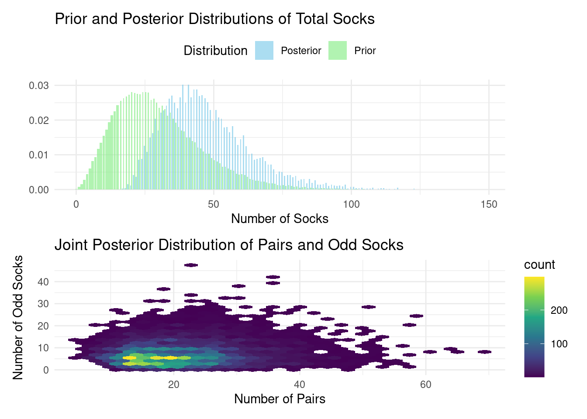

library(ggplot2)
# Dataframe of possible sock counts
sock_counts <- data.frame(n_socks = 0:100)
# Calculate probabilities from the negative binomial distribution
sock_counts$probability <- dnbinom(sock_counts$n_socks, mu = 30, size = 4)
# Create the histogram
ggplot(sock_counts, aes(x = n_socks, y = probability)) +
geom_col(fill = "skyblue", color = "black") +
scale_y_continuous(labels = scales::percent) +
theme_minimal() +
labs(x = "Total Number of Socks", y = "Probability") +
ggtitle("Prior Distribution for Total Number of Socks")4 Bayes 101
In the bustling marketplace of ideas that is modern data science, Bayesian statistics stands out as a powerful and intuitive approach to understanding uncertainty and making decisions. For business data scientists, it offers a flexible framework that naturally incorporates prior knowledge, updates beliefs based on new evidence, and quantifies uncertainty in a way that’s both mathematically rigorous and intuitively appealing.
Now, let’s set some expectations. To truly thrive as a business data scientist, you’ll need more than a passing familiarity with statistics. Think of it this way: an analyst knows how to use a calculator, while a data scientist knows how that calculator works—and can even build one from scratch to tackle the specific problem at hand. Let me be clear: this chapter isn’t a course in calculator construction. We won’t delve into the nuts and bolts of how it’s built, or even all the inner workings. Instead, our aim is to convince you that this particular calculator is worth learning more about. We want to spark your curiosity, to show you why this tool deserves a prime spot in your data science toolbox.
In this chapter, we’ll explore the basics of Bayesian statistics, delve into Bayes’ rule, and examine why this paradigm is particularly well-suited for business applications.
4.1 The Essence of Bayesian Thinking
At its core, Bayesian statistics is about updating our beliefs in light of new evidence. This process mirrors how we often think about problems in business: we start with some prior knowledge or assumptions, gather data, and then update our understanding based on what we’ve learned.
As Kruschke and Liddell (2018) eloquently put it, “The main idea of Bayesian analysis is simple and intuitive. There are some data to be explained, and we have a set of candidate explanations. Before knowing the new data, the candidate explanations have some prior credibilities of being the best explanation. Then, when given the new data, we shift credibility toward the candidate explanations that better account for the data, and we shift credibility away from the candidate explanations that do not account well for the data.”
This perspective highlights a fundamental principle of Bayesian analysis: it’s a process of reallocating credibility across possibilities. In a business context, these “possibilities” might be different strategies, market scenarios, or parameter values in a model. As we gather more data, we adjust our beliefs about which possibilities are more or less likely to be true.
The Bayesian approach contrasts with the more traditional frequentist statistics in a fundamental way. While frequentists treat parameters as fixed (but unknown) quantities and data as random, Bayesians view parameters as random variables and data as fixed once observed. This shift in perspective leads to more intuitive interpretations of statistical results and allows for the incorporation of prior knowledge into our analyses.
4.2 Bayes’ Rule: The Heart of Bayesian Statistics
The cornerstone of Bayesian statistics is Bayes’ rule, named after the Reverend Thomas Bayes. This elegant formula shows us how to update probabilities when we receive new information. In its simplest form, Bayes’ rule is expressed as:
\[ P(A|B) = \frac{P(B|A)P(A)}{P(B)} \]
Where:
- \(P(A|B)\) is the posterior probability of A given B
- \(P(B|A)\) is the likelihood of B given A
- \(P(A)\) is the prior probability of A
- \(P(B)\) is the marginal likelihood of B
In the context of parameter estimation, which is often our goal in business data science, we can rewrite Bayes’ rule as:
\[ P(\theta|D) = \frac{P(D|\theta)P(\theta)}{P(D)} \]
Where:
- \(\theta\) represents our parameter(s) of interest
- \(D\) represents our observed data
- \(P(\theta|D)\) is the posterior distribution of our parameter given the data
- \(P(D|\theta)\) is the likelihood of the data given the parameter
- \(P(\theta)\) is our prior distribution for the parameter
- \(P(D)\) is the marginal likelihood of the data
This formulation clearly illustrates the process of reallocating credibility. We start with our prior beliefs about the parameters \(P(\theta)\), consider how likely the data are given those parameters \(P(D|\theta)\), and end up with an updated (posterior) belief about the parameters \(P(\theta|D)\).
4.3 The Case of the Declining User Engagement
Even if you haven’t formally studied Bayesian statistics, your brain is already wired to think like a Bayesian. To illustrate how this intuitive approach can be applied to real-world business problems, let’s consider a scenario that data scientists in the tech sector frequently encounter: investigating a sudden decline in user engagement and its potential impact on revenue.
Imagine you’re a business data scientist at a high-growth tech company that offers a subscription-based productivity app. You’ve noticed a concerning trend: daily active users (DAU) have dropped by 15% over the past month, and this is starting to affect revenue. Your task is to identify the most likely cause of this engagement drop and recommend actions to reverse the trend.
Let’s say we have four main hypotheses for the cause of the declining engagement:
- A recent feature update (Feature)
- Increased competition in the market (Competition)
- Seasonal variation (Seasonality)
- Changes in marketing spend (Marketing)
Before diving into the data, you have some prior beliefs about the likelihood of each cause, based on your experience and industry knowledge:
- Feature: 35% (feature updates can sometimes negatively impact user experience)
- Competition: 25% (the market is becoming more saturated)
- Seasonality: 20% (there’s often a summer slowdown in productivity app usage)
- Marketing: 20% (marketing budgets have been fluctuating)
This is your prior distribution. Now, as you investigate, you gather evidence:
- User feedback shows mixed reactions to the recent feature update, with some users reporting confusion about the new interface.
- Market research indicates that while a major competitor launched a new product, it hasn’t gained significant market share yet.
- Historical data shows a similar dip in engagement during the same period last year, though not as pronounced.
- Marketing spend has remained consistent over the past quarter.
As you collect this evidence, you update your beliefs about the likelihood of each cause. This is where Bayesian reasoning comes into play, allowing you to reallocate credibility based on the new information.
After considering the evidence, you might update your beliefs as follows:
- Feature: 60% (user feedback suggests this is a significant factor)
- Competition: 8% (less likely given the market research)
- Seasonality: 30% (historical data supports this as a contributing factor)
- Marketing: 2% (unlikely given consistent spend)
This is your posterior distribution. You’ve reallocated credibility based on the evidence, increasing your belief that the feature update and seasonality are the primary causes of the engagement drop.
4.4 Communicating Uncertainty: Credible Intervals vs. Confidence Intervals
In Bayesian statistics, we often express our uncertainty about an estimated parameter using credible intervals. A 95% credible interval, for example, is a range of values that we believe, with 95% probability, contains the true value of the parameter. This interpretation is quite intuitive and aligns well with how we naturally think about uncertainty.
It’s important to contrast credible intervals with confidence intervals, which are frequently misinterpreted (Hoekstra et al. 2014). While both express uncertainty, their interpretations differ:
A 95% confidence interval is constructed such that, if we were to repeat the experiment many times, 95% of the intervals we calculate would contain the true parameter value. This interpretation is somewhat less intuitive and focuses on the long-run behavior of the procedure rather than the specific interval at hand.
A 95% credible interval, on the other hand, directly states that there’s a 95% probability that the true parameter value lies within this particular interval, given the observed data and our prior beliefs.
In summary:
| Feature | Confidence Interval | Credible Interval |
|---|---|---|
| Philosophy | Frequentist | Bayesian |
| Interpretation | Repeated sampling | Probability of the parameter |
| Prior knowledge | Not used | Can be incorporated |
| Statement about | The interval itself | The parameter |
Analogy
Imagine you’re trying to estimate the height of a tree.
Confidence interval: You take multiple measurements from different angles and use them to construct an interval. You say, “If I repeated this process many times, 95% of the intervals I create would contain the tree’s true height.”
Credible interval: You consider your previous knowledge about trees in the area, combine it with your measurements, and say, “Based on my measurements and what I already know, there’s a 95% probability that the tree’s height is between X and Y meters.” Credible intervals provide a more intuitive and direct interpretation of uncertainty about a parameter. However, they require specifying prior distributions, which can be subjective. Confidence intervals, while less intuitive, are widely used and don’t require prior information.
Beyond Intervals: Posterior Probabilities for Tailored Insight
Though credible intervals offer a convenient snapshot of uncertainty, they might not always be the optimal tool to inform decisions. Let’s consider a scenario where we’re assessing whether an intervention’s impact surpasses a specific threshold. This threshold could be zero – indicating whether the intervention has any effect at all – or it could be any other relevant value, depending on the decision at hand.
In the Bayesian framework, we can bypass the limitations of intervals and compute the probability of the impact exceeding our threshold directly from the posterior distribution. We simply determine the proportion of the distribution that lies beyond the threshold. This gives us the posterior probability that the parameter of interest is greater than our chosen value, providing a clear and actionable insight.
It’s worth noting that we might have multiple thresholds relevant to different decisions. For example, we might be interested in the probability that the impact is at least ‘moderately’ large, or the probability that it is ‘substantially’ large. The Bayesian approach allows us to calculate these probabilities directly from the posterior, tailoring our uncertainty quantification to the specific decision context.
4.5 The Case of Karl Broman’s Socks: A Bayesian Adventure in Tiny Data
To illustrate the power of Bayesian thinking, even with limited data, let’s consider an intriguing example from Rasmus Bååth’s Blog, which he calls “Tiny Data, Approximate Bayesian Computation and the Socks of Karl Broman” (see original blog post). The problem is deceptively simple: Given that Karl Broman has 11 unique socks in his laundry, how many socks does he have in total? This is a perfect example of what Bååth calls “Tiny Data” - a situation where we have very limited information but still need to make an inference. It’s a scenario that business data scientists often face, where decisions need to be made with incomplete information.
The Bayesian Approach to the Sock Problem
Bååth tackles this problem using Approximate Bayesian Computation (ABC), an intuitive albeit computationally intensive method (see Rubin (1984)).
In this Bayesian adventure, we begin with two crucial pieces of information, encoded as prior probability distributions. The number of socks is a count variable, so we’ll employ a negative binomial data generating process. (We delve into this topic in more detail in Section 19.3.) For now, let’s follow Bååth’s lead and set (\(\mu = 30\)) and (size = 4).
Next, we need to specify our beliefs about the proportion of socks that have a pair. For this, we can use a beta data generating process. To remain consistent with the blog post, we’ll set shape1 = 15 and shape2 = 2. This distribution is skewed towards higher values, suggesting a belief that most socks in a laundry pile are likely to be paired. The parameters indicate an expectation around 0.88, reflecting the common experience that unmatched socks are less frequent.
# Create a sequence of proportions from 0 to 1
proportions <- seq(0, 1, length.out = 100)
# Calculate density values from the beta distribution
density_values <- dbeta(proportions, shape1 = 15, shape2 = 2)
# Create the density plot
ggplot(data.frame(proportion = proportions, density = density_values),
aes(x = proportion, y = density)) +
geom_line(color = "darkgreen") +
theme_minimal() +
labs(x = "Proportion of Paired Socks", y = "Density") +
ggtitle("Prior Distribution for Proportion of Paired Socks")These prior distributions encapsulate our initial beliefs before we observe any data. The Bayesian approach elegantly allows us to update these beliefs based on the evidence, leading to more informed posterior distributions.
Now, let’s craft the R code for simulating draws from this data generating process.
library(dplyr)
library(furrr)
library(patchwork)
set.seed(123)
# Enable parallel processing with the number of cores available
plan(multisession, workers = availableCores())
# Define the number of socks picked
n_picked <- 11
# Improved simulation function
simulate_socks <- function(n_picked) {
# Generate total number of socks from prior
n_socks <- rnbinom(1, mu = 30, size = 4)
# Generate proportion of paired socks from prior
prop_pairs <- rbeta(1, shape1 = 15, shape2 = 2)
# Calculate number of pairs and odd socks
n_pairs <- round(floor(n_socks / 2) * prop_pairs)
n_odd <- n_socks - n_pairs * 2
# Simulate picking socks
socks <- rep(seq_len(n_pairs + n_odd), rep(c(2, 1), c(n_pairs, n_odd)))
picked_socks <- sample(socks, size = min(n_picked, n_socks))
sock_counts <- table(picked_socks)
# Return results
tibble(
unique = sum(sock_counts == 1),
pairs = sum(sock_counts == 2),
n_socks = n_socks,
n_pairs = n_pairs,
n_odd = n_odd,
prop_pairs = prop_pairs
)
}
# Run simulations
n_sims <- 100000
sock_sim <- future_map_dfr(1:n_sims, ~simulate_socks(n_picked),
.options = furrr_options(seed = 123))
# Filter for matching simulations (11 unique socks, 0 pairs)
post_samples <- sock_sim %>%
filter(unique == 11, pairs == 0)This code implements the ABC method, which is a perfect illustration of the “reallocation of credibility across possibilities” that Kruschke and Liddell describe:
- We define prior distributions for the total number of socks (negative binomial) and the proportion of paired socks (beta). These represent our initial beliefs about the possibilities.
- We create a generative model that simulates picking socks from a laundry pile.
- We run this simulation many times (100,000 in this case), each time generating a possible scenario.
- We keep only those simulations that match our observed data (11 unique socks, 0 pairs). This step is where we reallocate credibility, focusing on the possibilities that are consistent with our observation.
- We analyze the results by calculating median values from the retained samples, which represent our updated beliefs.
Visualizing the Results
# Prepare data for plotting
prior_data <- sock_sim %>%
count(n_socks) %>%
mutate(prop = n / sum(n),
type = "Prior")
posterior_data <- post_samples %>%
count(n_socks) %>%
mutate(prop = n / sum(n),
type = "Posterior")
plot_data <- bind_rows(prior_data, posterior_data)
# Plot prior and posterior distributions
p1 <- ggplot(plot_data, aes(x = n_socks, y = prop, fill = type)) +
geom_col(position = "dodge", alpha = 0.7) +
scale_fill_manual(values = c("Prior" = "lightgreen", "Posterior" = "skyblue")) +
labs(title = "Prior and Posterior Distributions of Total Socks",
x = "Number of Socks", y = "", fill = "Distribution") +
theme_minimal() +
theme(legend.position = "top")
# Plot the posterior distribution of pairs and odd socks
p2 <- ggplot(post_samples, aes(x = n_pairs, y = n_odd)) +
geom_hex(bins = 30) +
scale_fill_viridis_c() +
labs(title = "Joint Posterior Distribution of Pairs and Odd Socks",
x = "Number of Pairs", y = "Number of Odd Socks") +
theme_minimal()
# Combine plots
p1 / p2Warning: Computation failed in `stat_binhex()`.
Caused by error in `compute_group()`:
! The package "hexbin" is required for `stat_bin_hex()`.
Results and Interpretation
After running this model, our best guess (median of the posterior) is that Karl Broman has approximately:
# Calculate summary statistics
summary_stats <- post_samples %>%
summarize(
median_socks = median(n_socks),
median_pairs = median(n_pairs),
median_odd = median(n_odd),
ci_lower_socks = quantile(n_socks, 0.025),
ci_upper_socks = quantile(n_socks, 0.975)
)- Total socks: 45 (95% CI: 24 - 86)
- Pairs of socks: 19
- Odd socks: 6
Remarkably, when Karl later revealed the actual numbers, it turned out there were 21 pairs and 3 odd socks, totaling 45 socks. The estimate is surprisingly close, considering we only had one piece of information to work with! The visualizations provide additional insights:
The first plot shows how our beliefs about the total number of socks changed from the prior (green) to the posterior (blue) distribution after incorporating the data. This is a clear visualization of the reallocation of credibility across possibilities. The second plot illustrates the joint posterior distribution of pairs and odd socks, showing the range of plausible combinations given our model and data.
This example beautifully illustrates several key aspects of Bayesian thinking:
- Incorporation of prior knowledge: The model uses reasonable priors based on general knowledge about sock ownership.
- Handling uncertainty: The posterior distribution provides a range of plausible values, not just a point estimate.
- Learning from limited data: Even with just one piece of information (11 unique socks), we can make a surprisingly accurate inference.
- Flexibility: The ABC approach allows us to work with a complex model that would be difficult to handle with traditional methods.
- Reallocation of credibility: We start with a wide range of possibilities and narrow down to those most consistent with our observation.
In business contexts, we often face similar situations - limited data combined with domain expertise or prior experience. The sock example, while whimsical, demonstrates how Bayesian methods can be powerful in such real-world scenarios. As we progress through this book, we’ll explore how these principles can be applied to more complex business problems.
As Kruschke and Liddell (2018) point out, one of the key advantages of Bayesian analysis is that “the posterior distribution can be directly examined to see which parameter values are most credible, and what range of parameter values covers the most credible values.” This direct interpretation is particularly valuable in business settings, where we often need to communicate results to non-technical stakeholders.
For instance, in our sock example, we can straightforwardly say that “there’s a 95% probability that the total number of socks is between 24 and 86.” This statement is intuitive and directly addresses the uncertainty in our estimate, which is crucial for informed decision-making. Additionally, we can quantify probabilities for specific scenarios, such as: “The probability that there are at least 15 pairs is 78%.”
Moreover, Bayesian methods naturally handle the “small data” scenarios that are common in business. While big data gets a lot of attention, many important business decisions are made with limited information. The Bayesian framework allows us to start with prior knowledge (perhaps based on industry benchmarks or previous experience), update this with whatever data is available, and still produce meaningful results.
A Note on Priors
It’s important to remember that the less data you have, the more influential your priors become. Transparency about your priors is essential, as is investigating the sensitivity of your findings to different prior choices. However, don’t shy away from using informative priors when justified by data. The interactive dashboard below utilizes {shinylive} (see Schloerke et al. (2024)) to run these simulations directly in your browser, allowing you to experiment with various priors and observe their impact.
#| standalone: true
#| viewerHeight: 800
library(shiny)
library(ggplot2)
library(dplyr)
library(furrr)
library(shinybusy)
library(shinydashboard)
# Enable parallel processing with the number of cores available
plan(multisession, workers = availableCores())
# Define the number of socks picked
n_picked <- 11
simulate_socks <- function(n_picked, mu, size, shape1, shape2) {
# Generate total number of socks from prior
n_socks <- rnbinom(1, mu = mu, size = size)
# Generate proportion of paired socks from prior
prop_pairs <- rbeta(1, shape1 = shape1, shape2 = shape2)
# Calculate number of pairs and odd socks
n_pairs <- round(floor(n_socks / 2) * prop_pairs)
n_odd <- n_socks - n_pairs * 2
# Simulate picking socks
socks <- rep(seq_len(n_pairs + n_odd), rep(c(2, 1), c(n_pairs, n_odd)))
picked_socks <- sample(socks, size = min(n_picked, n_socks))
sock_counts <- table(picked_socks)
# Return results
tibble(
unique = sum(sock_counts == 1),
pairs = sum(sock_counts == 2),
n_socks = n_socks,
n_pairs = n_pairs,
n_odd = n_odd,
prop_pairs = prop_pairs
)
}
ui <- dashboardPage(
skin = "black",
dashboardHeader(title = "Karl's Socks"),
dashboardSidebar(
numericInput(
inputId = "seed",
label = "Random Seed",
value = 123,
min = 1,
step = 1
),
numericInput(
inputId = "n_sims",
label = "Number of Simulations",
value = 10000,
min = 100,
step = 100
),
sliderInput(
inputId = "mu",
label = "mu",
min = 15,
max = 60,
value = 40,
step = 1
),
sliderInput(
inputId = "size",
label = "Size",
min = 3,
max = 10,
value = 4,
step = 1
),
sliderInput(
inputId = "shape1",
label = "Shape 1",
min = 2,
max = 20,
value = 15,
step = 1
),
sliderInput(
inputId = "shape2",
label = "Shape 2",
min = 2,
max = 8,
value = 2,
step = 1
),
actionButton("run_sim", "Run Simulation")
),
dashboardBody(
use_busy_spinner(spin = "fading-circle"),
fluidRow(
box(
title = "Prior Distribution for Total Number of Socks",
status = "danger", solidHeader = TRUE,
collapsible = TRUE,
plotOutput("prior_socks")
),
box(
title = "Prior Distribution for Proportion of Paired Socks",
status = "danger", solidHeader = TRUE,
collapsible = TRUE,
plotOutput("prior_prop")
)
),
fluidRow(
box(
title = "Prior and Posterior Distributions of Total Socks",
status = "danger", solidHeader = TRUE,
collapsible = TRUE,
plotOutput("distribution_plot")
),
box(
title = "Joint Posterior Distribution of Pairs and Odd Socks",
status = "danger", solidHeader = TRUE,
collapsible = TRUE,
plotOutput("joint_plot")
)
),
fluidRow(
valueBoxOutput("pr_pairs")
)
)
)
server <- function(input, output) {
sock_sim <- eventReactive(input$run_sim, {
show_modal_spinner()
on.exit(remove_modal_spinner())
set.seed(input$seed)
local_mu <- input$mu
local_size <- input$size
local_shape1 <- input$shape1
local_shape2 <- input$shape2
future_map_dfr(1:input$n_sims,
~simulate_socks(n_picked = 11,
mu = local_mu,
size = local_size,
shape1 = local_shape1,
shape2 = local_shape2),
.options = furrr_options(seed = 123))
})
# Filter for matching simulations (11 unique socks, 0 pairs)
post_samples <- reactive({
sock_sim() %>%
filter(unique == 11, pairs == 0)
})
output$pr_pairs <- renderValueBox({
req(post_samples())
valueBox(
scales::percent(mean(post_samples()$n_pairs > 14)),
"Pr[# Pairs > 14]", icon = icon("socks"),
color = "red"
)
})
# Prepare data for plotting
prior_data <- reactive({
sock_sim() %>%
count(n_socks) %>%
mutate(prop = n / sum(n),
type = "Prior")
})
posterior_data <- reactive({
if(nrow(post_samples()) == 0) {
return(tibble(n_socks = numeric(), prop = numeric(), type = character()))
}
post_samples() %>%
count(n_socks) %>%
mutate(prop = n / sum(n),
type = "Posterior")
})
output$prior_socks <- renderPlot({
# Dataframe of possible sock counts
sock_counts <- data.frame(n_socks = 0:100)
# Calculate probabilities from the negative binomial distribution
sock_counts$probability <- dnbinom(sock_counts$n_socks,
mu = input$mu,
size = input$size)
# Create the histogram
ggplot(sock_counts, aes(x = n_socks, y = probability)) +
geom_col(fill = "skyblue", color = "black")+
scale_y_continuous(labels = scales::percent) +
theme_minimal() +
labs(x = "Total Number of Socks", y = "Probability")
})
output$prior_prop <- renderPlot({
# Create a sequence of proportions from 0 to 1
proportions <- seq(0, 1, length.out = 100)
# Calculate density values from the beta distribution
density_values <- dbeta(proportions, shape1 = input$shape1,
shape2 = input$shape2)
# Create the density plot
ggplot(data.frame(proportion = proportions, density = density_values),
aes(x = proportion, y = density)) +
geom_line(color = "darkgreen") +
theme_minimal() +
labs(x = "Proportion of Paired Socks", y = "Density")
})
output$distribution_plot <- renderPlot({
req(prior_data(), posterior_data())
plot_data <- bind_rows(prior_data(), posterior_data())
ggplot(plot_data, aes(x = n_socks, y = prop, fill = type)) +
geom_col(position = "dodge", alpha = 0.7) +
scale_fill_manual(values = c("Prior" = "lightgreen", "Posterior" = "skyblue")) +
scale_y_continuous(labels = scales::percent) +
labs(x = "Number of Socks", y = "Probability", fill = "Distribution") +
theme_minimal() +
theme(legend.position = "top")
})
output$joint_plot <- renderPlot({
req(post_samples())
if(nrow(post_samples()) > 0) {
ggplot(post_samples(), aes(x = n_pairs, y = n_odd)) +
geom_hex(bins = 30) +
scale_fill_viridis_c() +
labs(x = "Number of Pairs", y = "Number of Odd Socks") +
theme_minimal()
} else {
ggplot() +
annotate("text", x = 0.5, y = 0.5, label = "No matching simulations found") +
theme_void()
}
})
}
shinyApp(ui, server)
4.6 Conclusion
Bayesian statistics offers a powerful and intuitive framework for business data science, aligning closely with how businesses make decisions. By incorporating prior knowledge, we can update our beliefs based on evidence and quantify uncertainty in a natural way. The concept of reallocating credibility across possibilities provides an intuitive way to think about learning from data.
Furthermore, Bayesian methods are particularly well-suited to the “small data” scenarios often encountered in business. While “big data” garners much attention, many crucial business decisions hinge on limited information. The Bayesian framework allows us to begin with prior knowledge, update it with available data, and then communicate our findings in plain language.
In essence, Bayesian statistics provides a flexible and powerful approach for tackling the complex and often uncertain world of business decision-making.